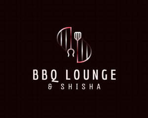

Trade Mark Journal No.2025/030 25 July 2025
UK00004224062 24 June 2025 (29,30,31,32,33,34,35,39,41,43)

- Class 29
- Meat, fish, poultry, and game, along with processed fruits and vegetables, dairy products, and edible oils and fats, jellies, jams, and compotes. Essentially, it focuses on goods of animal origin and preserved or processed foods; Meat-based snack food; Fish-based snack food; Milk drinks; Yoghurt drinks; Yogurt drinks; Flavoured milk drinks; Milk beverages; Yoghurt beverages; Yoghurt based drinks; Fruit-based snack food; Cooked meat dishes; Cheese-based snack foods; Casseroles [food]; Antipasto salads; Snack food (Fruit-based -); Omelets; Meat-based snack foods; Vegetable-based snack food; Galbi [grilled meat dish]; Tofu-based snack food; Fruit desserts; Prepared meat dishes; Dishes of fish; Shish kabobs; Falafel; Satay.
- Class 30
- Foodstuffs of plant origin, processed or preserved for consumption, and flavorings for food and beverages. This includes a wide range of items like coffee, tea, cocoa, rice, pasta,Pizza, bread, pastries, confectionery, and condiments. It also encompasses items like sauces, spices, seasonings, and even ice cream; Coffee drinks; Cocoa drinks; Coffee beverages; Drinks prepared from chocolate; Coffee based drinks; Drinks flavoured with chocolate; Tea-based beverages; Beverages (Tea-based -); Tea beverages; Drinks prepared from cocoa; Drinks containing chocolate; Flavourings of tea for food or beverages; Coffee-based beverages; Beverages (Coffee-based -); Chocolate beverages; Chocolate based drinks; Coffee beverages with milk; Prepared coffee beverages; Drinks containing cocoa; Ice cream drinks; Breakfast cake; Meal; Breakfast cereals, porridge and grits; Canapes; Bean meal; Chow mein [noodle-based dishes]; Muesli desserts; Sopapillas [fried pastries]; Kasha [meal]; Snack food (Rice-based -); Prepared pizza meals; Farina [meal]; Corn meal; Chocolate-based meal replacement bars; Mustard meal; Ready to eat savory snack foods made from maize meal formed by extrusion; Dinner rolls; Hamburger sandwiches; Turkey sandwiches; Sandwiches; Wheat meal; Edible gold for decorating food and beverages; Breakfast cereals containing fruit; Rice-based snack food; Cereal breakfast foods; Prepared desserts [pastries]; Cereal-based snack food; Dessert puddings; Sandwiches containing salad; Fruit cake snacks; Open sandwiches; Hot breakfast cereals; Rice cake snacks; Pasta dishes; Breakfast cereals; Snack food (Cereal-based -); Noodle-based prepared meals; Kebab sauce; Flavourings of tea; Chai tea; Coffee flavourings; Jasmine tea; Fruit flavoured tea [other than medicinal]; Herbal tea; Coffee flavorings [flavourings]; Apple flavoured tea [other than for medicinal use]; Extracts of coffee for use as flavours in beverages.
- Class 31
- Fish food; Food for fish.
- Class 32
- Non-alcoholic drinks; Cola drinks; Juice drinks; Carbonated non-alcoholic drinks; Non-alcoholic fruit drinks; Isotonic non-alcoholic drinks; Fruit drinks; Carbohydrate drinks; Non-alcoholic malt drinks; Energy drinks; Soft drinks; Colas [soft drinks]; Non-alcoholic beverages; Beverages (Non-alcoholic -); Slush drinks; Vegetable drinks; Non-carbonated soft drinks; Non-alcoholic vegetable juice drinks; Cordials (non-alcoholic beverages); Carbonated soft drinks; Fruit-flavored soft drinks; Low-calorie soft drinks; Non-alcoholic sparkling fruit juice drinks; Frozen fruit-based drinks; Non-alcoholic beverages flavoured with coffee; Non-alcoholic carbonated beverages; Smoothies [non-alcoholic fruit beverages]; Non-alcoholic beer flavored beverages; Fruit juice drinks; Fruit flavoured drinks; Fruit flavored drinks; Non-alcoholic soda beverages flavoured with tea; Non-alcoholic beverages flavored with coffee; Coffee-flavored soft drinks; Cocktails, non-alcoholic; Non-alcoholic cocktails; Soft drinks flavored with tea; Sherbets [beverages]; Fruit flavoured carbonated drinks; Fruit beverages (non-alcoholic); Fruit-based soft drinks flavored with tea; Beer-based beverages; Non-alcoholic beverages flavoured with tea; Syrups used in the preparation of soft drinks; Frozen fruit drinks; Root beers, non-alcoholic beverages; De-alcoholized drinks; Syrups for making fruit-flavored drinks; Non-alcoholic beverages flavored with tea; Fruit juice beverages (Non-alcoholic -); Fruit-flavoured beverages; Non-alcoholic fruit cocktails; Non-alcoholic fruit juice beverages; Fruit-based beverages; Non-alcoholic beverages with tea flavor; Syrups for making soft drinks; Sorbets [beverages]; Sherbet beverages; Fruit-flavored beverages; Fruit flavored soft drinks; Non-alcoholic syrups for making beverages; Syrups for making non-alcoholic beverages; Syrups for beverages; De-alcoholised drinks; Apple juice drinks; Squashes [non-alcoholic beverages]; Non-alcoholic malt beverages; Energy drinks containing caffeine; Non-alcoholic flavored carbonated beverages; Sarsaparilla [non-alcoholic beverage]; Soft drinks for energy supply; Isotonic beverages; Orange juice drinks; Non-alcoholic honey-based beverages; Honey-based beverages (Non-alcoholic -); Sports drinks containing electrolytes; Non-alcoholic beer-based cocktails; Non-alcoholic beers; Powders used in the preparation of fruit-based drinks; Iced fruit beverages; Aloe vera drinks, non-alcoholic.
- Class 33
- Alcoholic beverages, except beer,Wines,Red wine, sparkling wine, grape wine Spirits,Whisky, vodka, gin Liqueurs,Ciders,Pre-mixed alcoholic beverages,Cocktails Alcoholic beverages, Alcopops, Sake Preparations for making alcoholic beverages; Wine-based drinks; Alcoholic fruit cocktail drinks; Wine coolers [drinks]; Alcoholic energy drinks; Rum-based beverages; Low alcoholic drinks; Cordials [alcoholic beverages]; Alcoholic beverages except beers; Alcoholic beverages (except beers); Alcoholic beverages [except beers]; Alcoholic carbonated beverages, except beer; Wine-based beverages; Alcoholic beverages, except beer; Alcoholic beverages (except beer); Beverages (Alcoholic -), except beer; Spirits [beverages]; Pre-mixed alcoholic beverages; Alcoholic cocktails; Pre-mixed alcoholic beverages, other than beer-based; Alcoholic beverages of fruit; Alcoholic fruit beverages; Cocktails; Dessert wines.
- Class 34
- Shisha tobacco; Shisha pipes; Hookah tobacco; Electronic shisha pipes; Hookahs; Steam stones for hookahs; Smokeless cigarette vaporizer pipes; Electronic hookahs; Menthol pipe tobacco; Smoking tobacco; Pipes for smoking mentholated tobacco substitutes.
- Class 35
- Retail services in relation to alcoholic beverages (except beer); On-line ordering services in the field of restaurant take-out and delivery.
- Class 39
- Transportation of food; Transport of food; Packaging of food; Storage of food; Food delivery; Delivery of food; Packing of food; Delivery of food and drink prepared for consumption.
- Class 41
- Karaoke lounge services.
- Class 43
- Food and drink catering; Catering of food and drink; Catering (Food and drink -); Catering of food and drinks; Preparation of food and drink; Preparation of food and beverages; Provision of food and drink in restaurants; Fast food restaurants; Food preparation; Take-away food and drink services; Providing food and drink; Providing of food and drink; Takeaway food and drink services; Serving food and drinks; Providing food and beverages; Provision of food and beverages; Provision of food and drink; Hospitality services [food and drink]; Take-away food services; Providing food and drink in bistros; Decorating of food; Food and drink preparation services; Food and drink catering for institutions; Services for the preparation of food and drink; Takeaway food services; Food and drink catering for banquets; Catering for the provision of food and drink; Take-away fast food services; Providing food and drink for guests in restaurants; Serving food and drink for guests in restaurants; Catering for the provision of food and beverages; Providing food and drink in doughnut shops; Food and drink catering for cocktail parties; Serving food and drink for guests; Cocktail lounge buffets; Carvery restaurant services; Sushi restaurant services; Tempura restaurant services; Bed and breakfast services; Hotel restaurant services; Bar and restaurant services; Restaurant and bar services; Fast-food restaurant services; Ramen restaurant services; Washoku restaurant services; Restaurant reservation services; Japanese restaurant services; Cocktail lounge services; Lounge services (Cocktail -); Restaurant services; Serving food and drink in Internet cafes; Self-service cafeteria services; Providing food and drink for guests; Arranging of wedding receptions [food and drink]; Catering services for the provision of food and drink; Reservation and booking services for restaurants and meals; Rental of furniture, linens, table settings, and equipment for the provision of food and drink; Serving food and drink in restaurants and bars; Catering in fast-food cafeterias; Cafeteria services; Snack bar services; Restaurant services for the provision of fast food; Serving food and drink in doughnut shops; Udon and soba restaurant services; Spanish restaurant services; Self-service restaurant services; Catering services for providing European-style cuisine; Salad bars [restaurant services]; Take-out restaurant services; Take-away restaurant services; Hotel catering services; Shisha bars; Hookah lounge services; Hookah bar services; Cocktail lounges.
purna sekhar reddy Katari